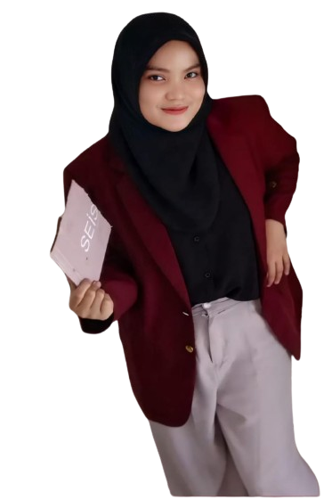

Hai, Saya Ririn Medistarani
Saya adalah seorang mahasiswa informatika
Sebagai seorang mahasiswa informatika, saya sedang mendalami berbagai aspek dan topik menarik dalam dunia teknologi informasi, termasuk pemrograman, jaringan komputer, keamanan siber, kecerdasan buatan, dan pengembangan perangkat lunak. Beberapa proyek yang telah saya kerjakan meliputi pengembangan game, situs web, aplikasi seluler, dan sistem tertanam berbasis mikrokontroler serta Internet of Things (IoT).
